CAN I PUT YOU ON HOLD (2026)
A man struggles with the crushing bureaucracy of immigration as he waits on hold with his immigration lawyer, trying to keep hope alive for his future with his fiancée, only to face a devastating setback that forces him to reconsider everything.
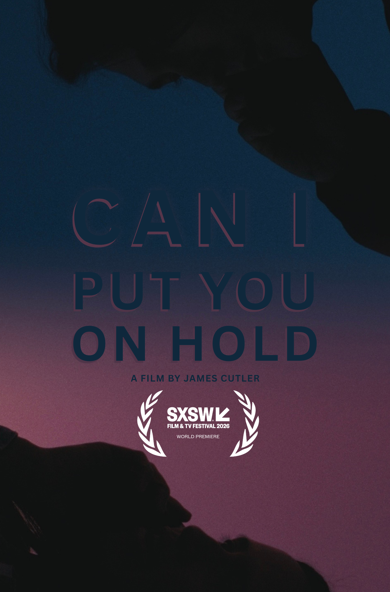
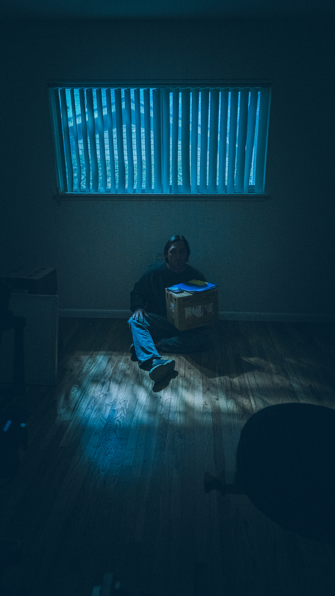
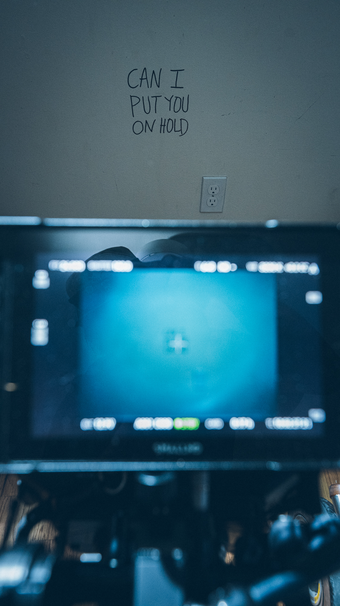
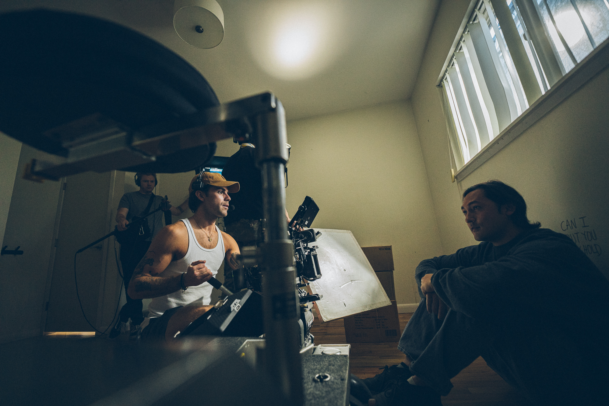
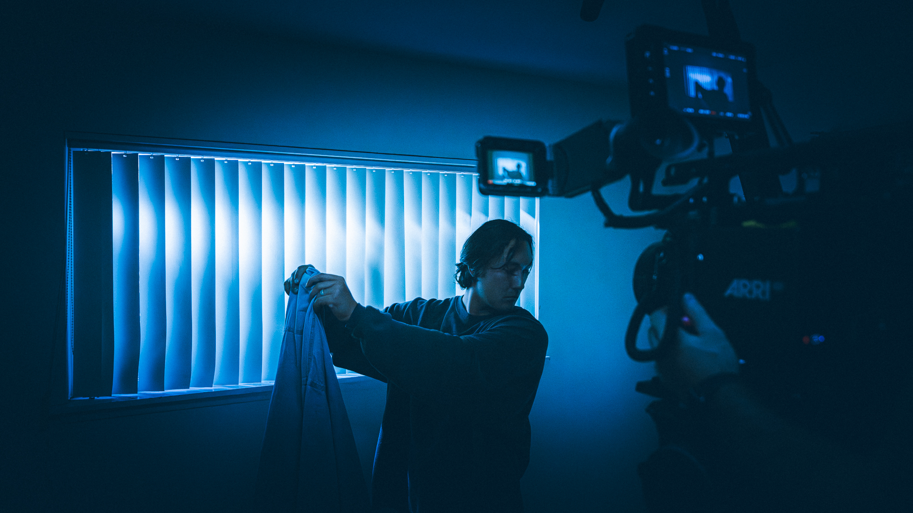
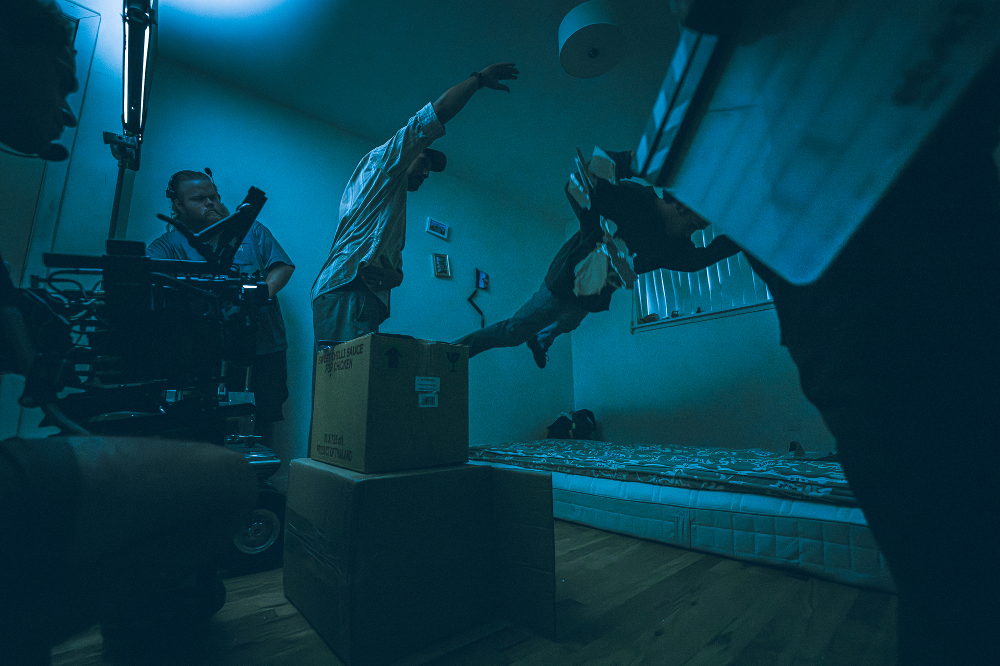
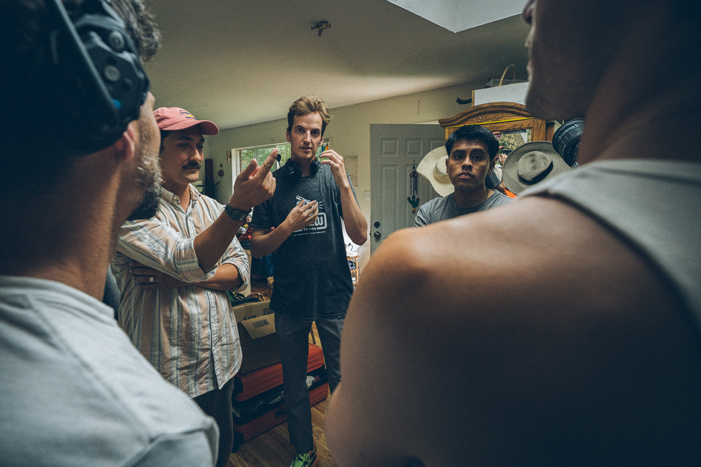
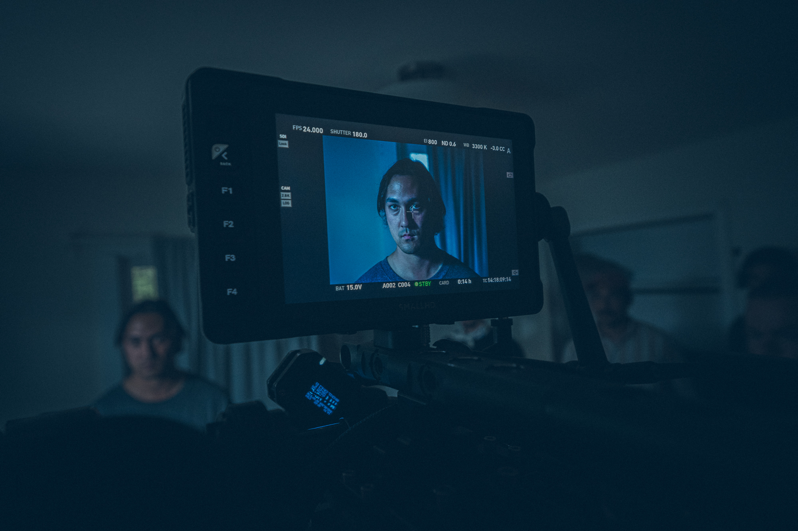
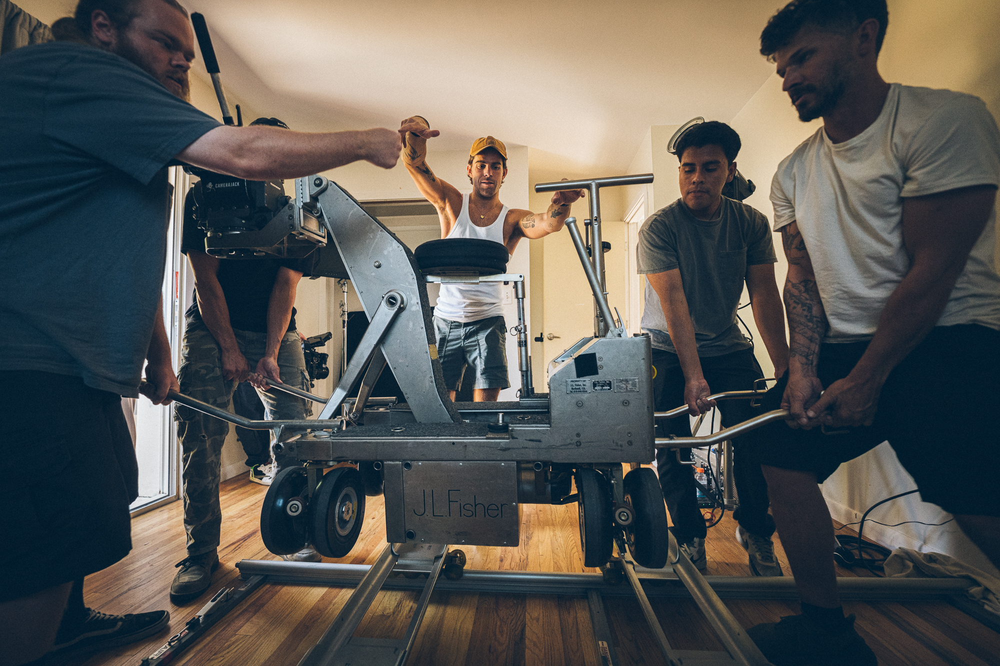
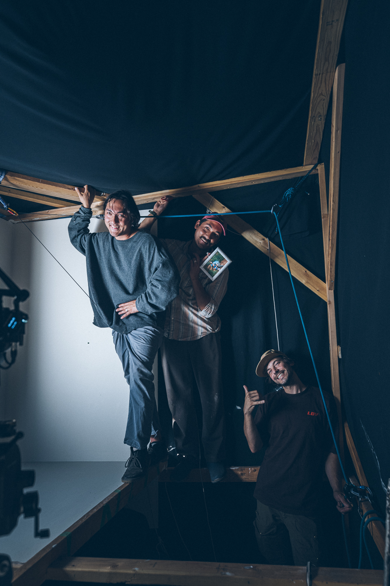
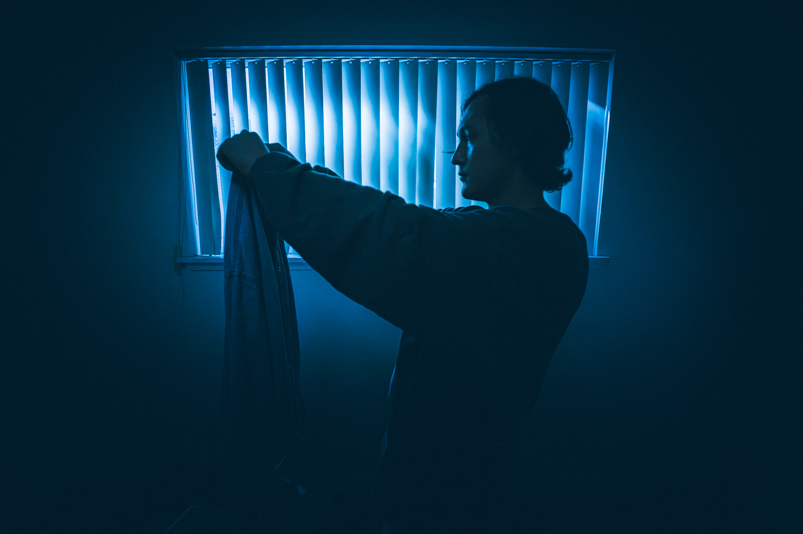
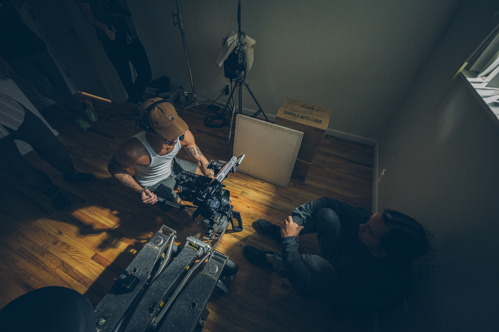
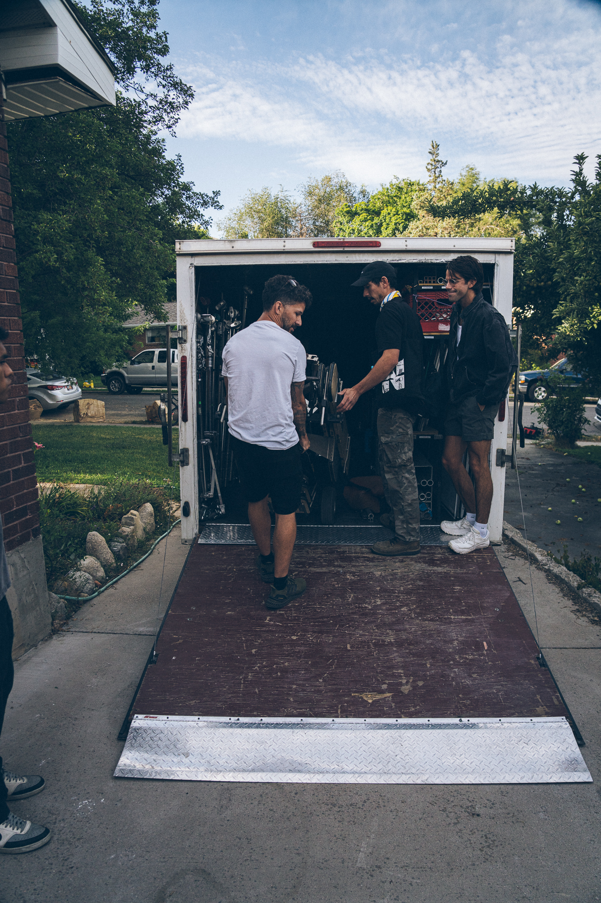
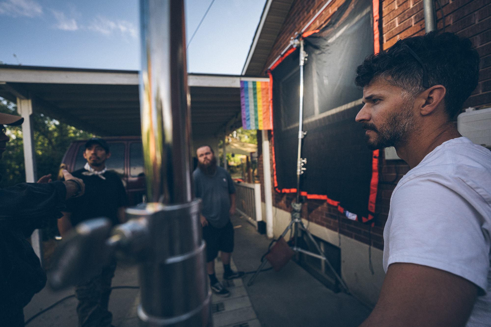
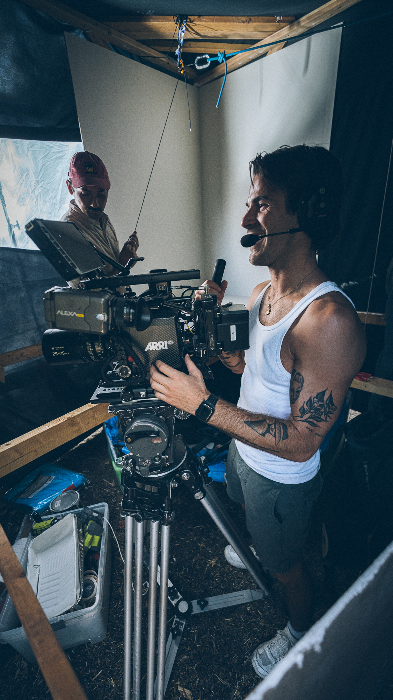
Photography by Gaz Leah
Screenings & Awards:
Davey Film Grant 2025
SXSW 2026 - World Premiere
SFFILM Festival 2026 - California Premiere
CAAM Fest 2026
deadCenter Film Festival 2026
Credits:
Writer/Director/Editor: James Cutler
Writer: Matthew Cutler
Matthew Cutler as himself
Dangmo Kanyawee as herself
Producer and Editor: Jack Hessler
Director of Photography: Brian Durkee
Music Composition and Production: Michelle Cheuk
Executive Producers: Phil Hessler and Cole Sax
Co-Producer: Johvan Padilla
1st AC: Landon Thomassen
Gaffer: Ariel Soto
Key Grip: Seth Taylor
Swing: Evan Moore
Production Sound: Jackson Hall
Stunt Support: Gaz Leah
Stunt Coordinators: Matthew Cutler and James Cutler
Stunt Driver: Scott Kyle
Production Assistants: Rodrigo Gutierrez, Carson Blikenstaff, and Daniel Kirkham
Sound Design: James Cutler
Sound Mixing: Michelle Cheuk
Photographer: Gaz Leah
Cast:
Brian: Jason Cutler
Secretary: Kindia du Plessis
Co-Worker: Soonyoung Cutler
Musicians:
Saxaphone: Marty Bodell
Keys: Heather Cutler
Guitar: Brandon Lewis
Bass: Simon McBride
Drums: Jacob Ward
End Credits Song: Brady Flores
Omnichord: James Cutler
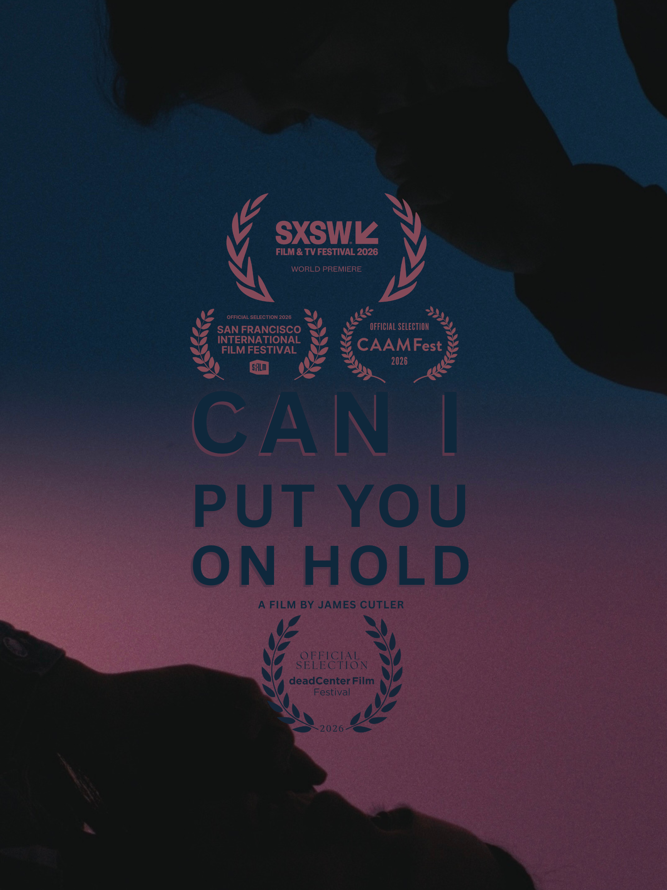